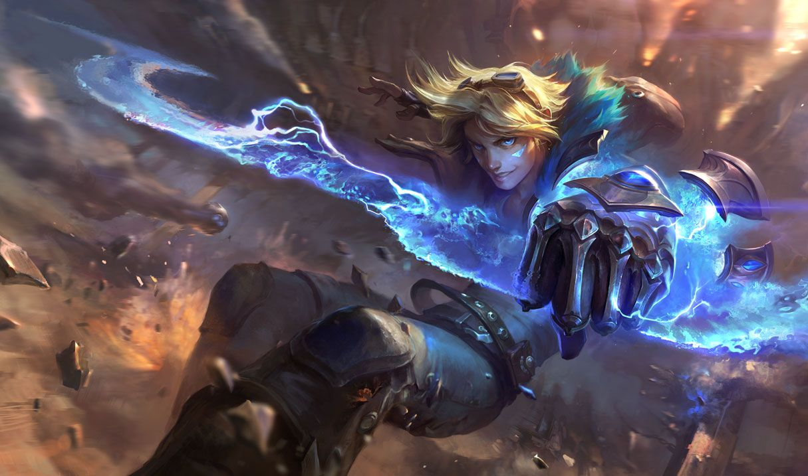

마법에 타고난 재능을 가진 멋진 모험가 이즈리얼은 오래전에 사라진 지하 묘지를 탐험하고 고대 저주에 맞서 싸우며 힘든 역경을 손쉽게 극복한다. 끝없는 용기와 무모함을 지닌 그는 어떠한 상황에서도 즉흥적으로 헤쳐나가는 것을 선호한다. 기지를 발휘할 때도 있지만, 대부분은 파괴적이고 불가사의한 폭발을 일으키는 슈리마의 신비한 장갑에 의지한다. 한 가지 분명한 사실은 이즈리얼이 가는 곳에 말썽이 있다는 것이다. 혹은 눈앞에 있거나. 아마 사방에 있을지도 모른다.
럭스는 짝사랑 상대.카사딘과 렉사이는 이즈리얼이 탐험하고 있는 슈리마에서 유명한 길잡이와 괴물이다.